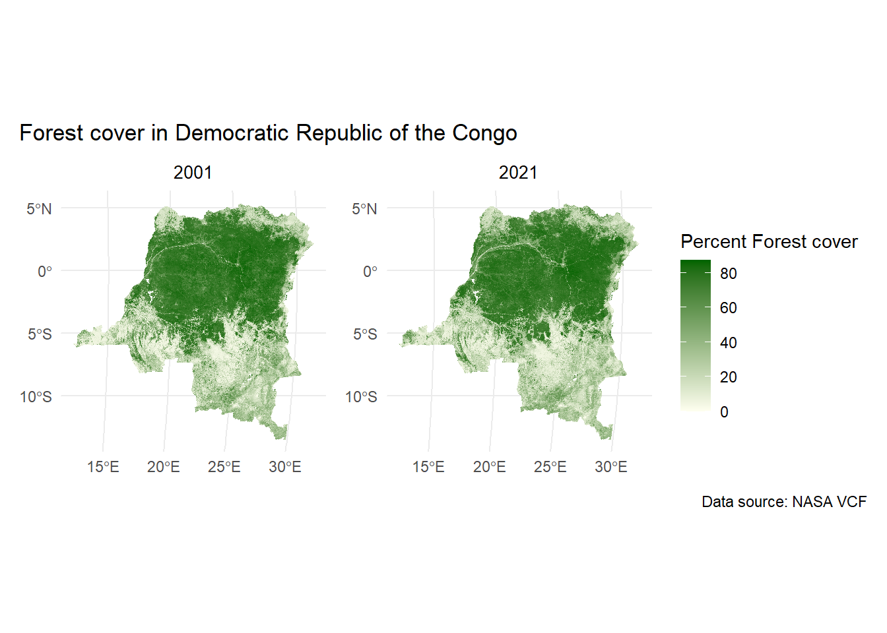
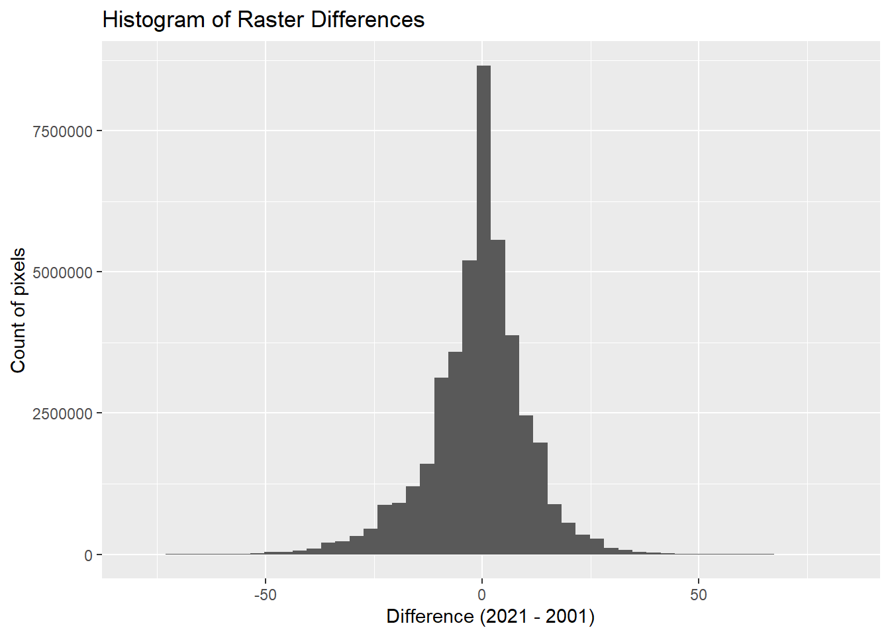
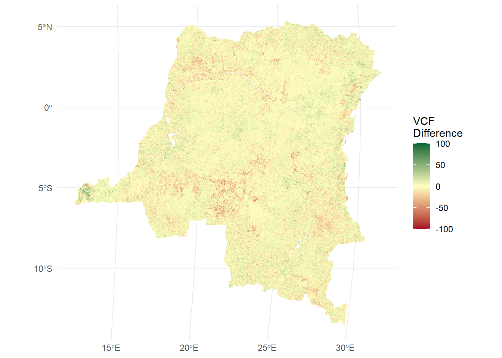

Measuring forest cover loss using remotely sensed data - Part 2
Vegetative Continuous Fields
Forest Cover Loss
DHS microdata
terra
R
ggspatial
sf
Author
Affiliation
Devon Kristiansen
IPUMS Global Health Research Manager
Published
August 20, 2026
Going beyond binary
In our last post, we estimated the net forest cover loss in hectares in the Democratic Republic of the Congo between 2001 and 2021. This involved using coarse spatial resolution land cover data from NASA, which indicated whether the pixel was majority forest with a canopy density of at least 60%. A source of uncertainty here, however, is that we might not be observing forest loss using simple land cover data at a spatial scale of 0.05 degrees per pixel. The level of spatial resolution may be too course to accurately categorize forest loss.
We could alternatively use a data product called Vegetation Continuous Fields (VCF) that contains the percent coverage of a pixel in terms of forest, non-forest vegetation, and non-vegetative cover. VCF data can indicate relative degradation, or reduction in forest density or cover that the binary delineation may miss.
An example study using VCF is Johnson et al (2013), which found evidence that young children in areas with a negative trend in forest cover in the years prior to the Malawi 2013 DHS survey had less diverse diets, and children in areas with more forest cover at the time of the survey were less likely to have symptoms of diarrheal disease.1
Comparative case study: Democratic Republic of the Congo
We’ll compare our bi-temporal deforestation estimate from the previous blog post to an estimate using VCF data instead.
First, we’ll bring in the usual R libraries to handle spatial data and read in VCF data and a DRC border shapefile. The VCF data come from NASA’s Earthdata Search, and the code for the data product is MOD44B. For more details on how to download these data, see our post on vegetative cover data.
VCF files come in HDF format, and include multiple layers. Percent of forest cover is the first layer. Before the code begins here, we pulled out the first layer of each tile and saved it as a TIF file with the same name as HDF file with a .tif extension.
Code
# Load librarieslibrary(terra)library(tidyr)library(stringr)library(sf)library(dplyr)library(purrr)library(ggplot2)library(ggspatial)library(patchwork)library(RColorBrewer)library(scales)library(ipumsr)library(gt)# Read in VCF files in TIF formattif_files_vcf_2001 <-list.files("data_local/2001", full.names =TRUE, pattern ="\\.tif$")tif_files_vcf_2021 <-list.files("data_local/2021", full.names =TRUE, pattern ="\\.tif$")# Read in DRC border filesdrc_internal_borders <-read_sf("data/COD_admbnda_adm1_20170407.shp") |>st_make_valid()# Convert the borders into a Spat Vector objectdrc_borders_vector <-vect(drc_internal_borders)# Create a version of the borders that is only the # national border to crop and mask raster datadrc_borders_union <-st_union(drc_internal_borders)drc_borders_union_sf <-st_sf(geometry = drc_borders_union)drc_borders_union_sf <-st_make_valid(drc_borders_union_sf)
Second, we’ll use techniques already covered on this blog, such as reading in the spatial data, “mosaic-ing” the pieces for full coverage of the DRC, and creating a function to perform the same operations on data from two different time points.
# Create function to mosaic and crop dataprep_vcf_data <-function(file_list,borders_file) {#Read in tile codes tile_codes_vcf <-unique(str_extract(file_list, "h[0-9]{2}v[0-9]{2}")) tiles_vcf <-map( tile_codes_vcf,function(code) file_list[str_detect(file_list, code)] )# Load vcf TIF files for each set of files corresponding to a particular tile tiles_data_vcf <-map( tiles_vcf, function(x) rast(x) )# Obtain CRS of vcf raster data vcf_crs <-crs(tiles_data_vcf[[1]])# Transform borders to same CRS as VCF borders_file_vcf_crs <-st_transform(borders_file, crs = vcf_crs)# Transform borders into a vector borders_vector <-vect(borders_file_vcf_crs)# Crop tiles to the extent of the country's borders tiles_data_vcf_cropped <-map( tiles_data_vcf, function(x) crop(x, borders_vector) )# Mosaic tiles into one layer vcf_layer <-reduce(tiles_data_vcf_cropped, mosaic)# Mask layer with border vector vcf_layer_mask <- terra::mask(vcf_layer, borders_vector)#Values of 200 indicate water vcf_layer_mask[vcf_layer_mask ==200] <-NAreturn(vcf_layer_mask)}# Apply our custom function to 2001 and 2021 VCF datavcf_2001 <-prep_vcf_data(tif_files_vcf_2001,drc_borders_union_sf)vcf_2021 <-prep_vcf_data(tif_files_vcf_2021,drc_borders_union_sf)
We now have two rasters that contain data on the percent of each pixel that is forest, one in 2001 and the other from 2021. VCF is an annual data product, so we don’t have to summarize over time.
Next, we’ll visualize the two rasters, but we’ll aggregate them by a factor of 4. The MOD44B data come in a 250m resolution, so mapping them on the scale of the DRC takes a lot of processing power.
# Aggregate by a factor of 4vcf_2001_1km <-aggregate( vcf_2001,fact =4,fun = mean,na.rm =TRUE)vcf_2021_1km <-aggregate( vcf_2021,fact =4,fun = mean,na.rm =TRUE)
Aggregating the ~250m raster pixels by a factor of 4 will give us a resolution of approximately one kilometer.
# Checking spatial resolution of aggregated data (in meters)res(vcf_2001_1km)#> [1] 926.6254 926.6254# Plot VCF of DRC in 2001 and 2021 next to each othervcf_2001_graph_drc <-ggplot() +layer_spatial(vcf_2001_1km) +scale_fill_gradient(low ="ivory", high ="darkgreen", na.value ="transparent",guide ="none" ) +theme_minimal() +labs(title ="2001") +theme(plot.title =element_text(hjust =0.5, size =10))vcf_2021_graph_drc <-ggplot() +layer_spatial(vcf_2021_1km) +scale_fill_gradient(low ="ivory", high ="darkgreen", na.value ="transparent",name ="Percent Forest cover" ) +theme_minimal() +labs(title ="2021") +theme(plot.title =element_text(hjust =0.5, size =10))combined_maps <- vcf_2001_graph_drc + vcf_2021_graph_drc combined_maps +plot_annotation(title ="Forest cover in Democratic Republic of the Congo", caption ="Data source: NASA VCF")

VCF data gives us significantly more detail than the land cover data in terms of spatial resolution and a percentage gradient of tree cover.
Summarizing net forest loss - Percent change approach
If we want to estimate the net forest loss, we can find the difference between the area of forest across all pixels in 2021 and in 2001. If you were going to use Johnson et al 2013’s methodology to measure net forest change in a surveyed household’s context, we could create buffers around the cluster GPS point and find the mean difference between 2001 and 2021, like we did for NDVI values a previous blog post.
# Take the the difference of the two VCF rastersvcf_difference <- vcf_2021 - vcf_2001# Convert to a data framevcf_difference_values <-as.data.frame(vcf_difference, na.rm =TRUE)names(vcf_difference_values) <-"diff"# Plot the difference values of all pixels in a histogramggplot(vcf_difference_values, aes(x = diff)) +geom_histogram(bins =50) +labs(x ="Difference (2021 - 2001)",y ="Count of pixels",title ="Histogram of Raster Differences" )

According to the VCF data, the majority of pixels did not change much, but some pixels experienced up to a gain or loss of 80 percentage points of tree cover. To compare with the previous post, we’ll map the differences in VCF spatially.
# Create a color palette to map change in forest covervcfdiff_palette <-brewer.pal(11, "RdYlGn")# Map the difference rastervcf_differences_map <-ggplot() +layer_spatial(vcf_difference) +scale_fill_gradient2(low = vcfdiff_palette[1],mid = vcfdiff_palette[ceiling(length(vcfdiff_palette)/2)],high = vcfdiff_palette[length(vcfdiff_palette)],midpoint =0,limits =c(-100, 100),na.value ="transparent",name ="VCF\nDifference" ) +theme_minimal()vcf_differences_map

The smaller pixel size and the change value gradient makes the change less obvious at the country-level scale when mapped, though we can still see forest loss on the periphery of the Congo Basin rainforest and along the Congo River. Let’s see what estimate we calculate for the entire country to compare to the previous post’s estimate.
Because each of the pixels is 231.6564 meters in resolution, we can square this value in kilometers (0.2316564 km) to get square kilometers, then multiply by the sum of the change in percentage points across all pixels.
# Divide VCF difference data by 100 to get proportion change rather than percent# And multiply each pixel by 0.2316564^2 to get sq km per pixelvcf_difference_values <- vcf_difference_values %>%mutate(area_change = (diff/100)*0.2316564^2)# Sum all pixels and multiply sq km by 100 to get hectaressum(vcf_difference_values$area_change)*100#> [1] -1871153
Our estimate using VCF is a net forest loss of 1.87 million hectares. That’s a significantly different estimate than the 6 million hectares from the previous post.
Demonstration example
To demonstrate how the calculation above works, consider a fictitious country that is 100 square kilometers with four pixels 5 km across. In the first time point, the pixels have 80%, 60%, 40%, and 20% tree cover. In the second time point, the same pixels have 65%, 50%, 30%, and 15% forest cover. The average tree cover for the entire country decreased from 50% to 40% (50 square kilometers to 40 square kilometers of tree cover). Each pixel is 25 square kilometers (5 x 5).
# Create a 2 x 2 raster of the fictious countryr <-rast(nrows =2,ncols =2,xmin =0,xmax =10,ymin =0,ymax =10)# Tree/forest cover at the two time pointstime1 <-c(80, 60,40, 20)time2 <-c(65, 50,30, 15)# Add the two layers into one objectcountry <-c(r, r)# Assign the values to each layervalues(country) <-c(time1, time2)# Assign labels to each layernames(country) <-c("Time 1", "Time 2")# Calculation of area difference25* ((80-65) + (60-50) + (40-30) + (20-15))/100#> [1] 10
What we’re doing with the estimation approach above, but applied to this example is the following calculation:
25 * [(65-80) + (50-60) + (30-40) + (15-20)]/100
We’re multiplying the area of each pixel (25 sq km) by the sum of all pixels’ percent change between time 1 and time 2. This equation evaluates to net -10 square kilometers of tree cover loss across the entire “country”.
Summarizing net forest loss - Approach replicating the pixel majority threshold
Considering that LULC data uses a threshold of 60% tree cover to determine whether a pixel is majority forest, let’s try to replicate that using VCF. We could calculate the net change in area of pixels with 60% or more tree cover between 2001 and 2021.
First, we’ll create a raster that contains a binary variable indicating whether the forest cover is 60% or more, and create a difference raster between the two time points.
# Calculate area of pixels with > 60% tree cover in 2001vcf_2001_60per <-ifel(vcf_2001 >=60, 1, 0)# Calculate area of pixels with > 60% tree cover in 2001vcf_2021_60per <-ifel(vcf_2021 >=60, 1, 0)# Find the differencevcf_60per_difference <- vcf_2021_60per - vcf_2001_60per
Then we’ll calculate the net sum of all the pixels, which should be a positive number if there was net increase in the number of pixels with 60% forest cover, and negative if there is a net decrease. Lastly, we’ll multiply the net difference of pixels by the area of each pixel to get the total area of change.
# Calculate the sum of the pixelstotal_net <-global(vcf_60per_difference, "sum", na.rm =TRUE)[1, 1]# Multiply the sum of the pixels by 0.2316564^2 to get sq km and 100 to get hectares total_net*(0.2316564^2)*100#> [1] -9408944
Now we have an estimate of 9.4 million hectares, which is greater than the LULC estimate of 6 million hectares. Perhaps we are picking up that a lot of forest areas were being degraded to just less than 60% of a pixel rather than completely removed.
In summary
We don’t know the exact, true amount of forest that was lost - we use multiple estimates to triangulate as close as we can to the truth. What each estimate agrees on, however, is that DRC did experience net loss of forest cover between 2001 and 2021. Using LULC data, we estimated 6 million hectares of net loss, but using VCF data we estimated 1.87 and 9 million hectares of loss using two different approaches.
In a warm and wet climate such as the DRC, trees regenerate quickly. Even in places where LULC might not consider a pixel to be forested, the reflectance used to create the VCF still picks up vegetation consistent with forest canopy, which may explain our first approach’s lower estimate than LULC. The relative coarseness of LULC data to VCF’s finer detail may also contribute to the difference.
This post is simply a demonstration of how one could approach characterizing changes in forest cover to incorporate into health and climate change models using available remotely-sensed data. VCF data is well suited to small-scale changes in an individual’s environmental context because of its gradient of percent tree cover and fine spatial detail.
Looking ahead
Next time, we will consider seasonality and using vegetative cover data to detect when a pixel has converted from tree to non-tree vegetated cover.
References
1. Johnson, K. B., Jacob, A., & Brown, M. E. (2013). Forest cover associated with improved child health and nutrition: Evidence from the MalawiDemographic and HealthSurvey and satellite data. Global Health: Science and Practice, 1(2), 237–248. https://doi.org/10.9745/GHSP-D-13-00055